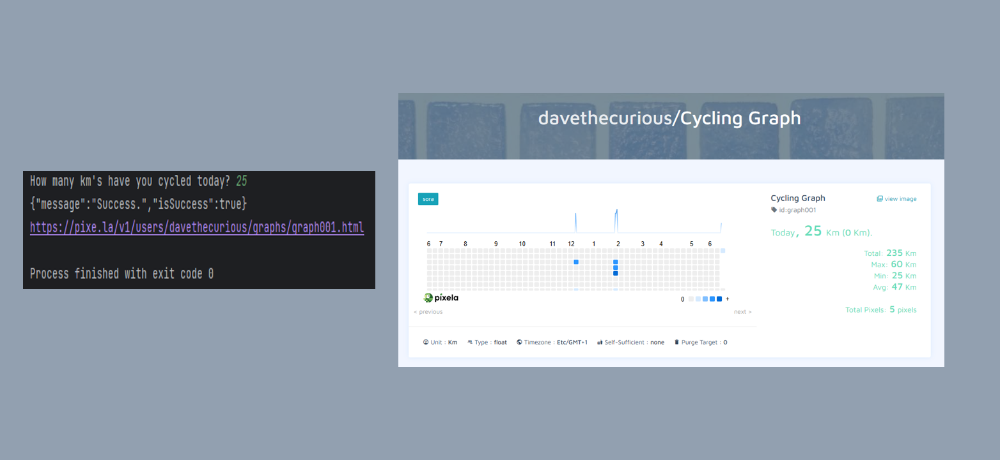

Workout Tracker
This Python script interacts with the Pixela API to create, configure, and update a graph for tracking cycling distance. It allows users to log their daily cycling distance and visualize their progress over time.
This Python script interacts with the Pixela API to create, configure, and update a graph for tracking cycling distance. It allows users to log their daily cycling distance and visualize their progress over time.